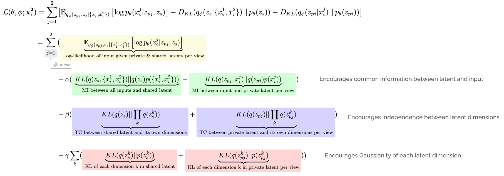

Self-supervised learning (SSL) offers a powerful way to learn robust, generalizable representations without la- beled data. In music, where labeled data is scarce, existing SSL methods typically use generated supervision and multi-view redundancy to create pretext tasks. However, these approaches often produce entangled representations and lose view-specific information. We propose a novel self-supervised Multi-view Audio Representation Learning framework (MARL) to incentivize separation between private and shared representation spaces. A case study on audio disentanglement in a controlled setting demonstrates the effectiveness of our method.
Our proposed system is shown above. The input to the model is a pair of normalized log mel spectrograms, denoted \((x _ 1, x _ 2\)). Crucially, this pair of waveforms has the same timbre (type of waveform), but different frequencies. For example, we might pass a pair of spectrograms coming from sawtooth waveforms, one with a frequency of 500Hz and another of 6000Hz. Through a multi-VAE architecture and adapted B-TCVAE objective (more details/ablation below), our model is able to learn to separate the shared information (timbre) into the shared latent \(z _ s\) and the "private" or view-specific information (i.e. frequency) into the private latents, \((z _ {p1}, z _ {p2}\)).
We first evaluate our system by examining the mutual information (MI) matrix between the generative factors (timbre and frequency) and the latents (private and shared). Note the dimensionality of the matrix; we train our model using 8-dimensional latents and here examine the mutual information by latent dimension and subspace, relative to the factors. We observe that timbre information is highly concentrated in the shared latent relative to private, and in contrast the private latent space contains much more information about frequency than the shared.
We also evaluate our model on downstream tasks: timbre and pitch classification. Using our trained model as a frozen feature extractor (i.e. the latents), we train a lightweight MLP classifier on top of the latents and evaluate classification downstream. We repeat this experiment for each combination of latent used (i.e. private or shared), and classification task and show results below. We show that when using the private latent vs. the shared latent, pitch classification is significantly better. Using the shared latents for timbre classificiation performs much better than when using the private.
To further understand the latent space, we use UMAP to plot the different latent subspaces and color by waveform type (timbre). Following the results above, again we're able to show that the shared latent space is able to capture timbre information very well. Interestingly, the cluster of sine wave embeddings is quite far from sawtooth, triangle, and square waves, likely due to the lack of harmonics in sine waves vs. the others as the distinguishing characteristic.
We utilize the following B-TCVAE-based objective, adapted to the multi-view setting:
 The objective above aims to maximize reconstruction accuracy (colored yellow) while simulataneously minimizing the KL-divergence, decomposed into three terms shown above. For each latent subspace...To better-understand this complex objective, we ablate the loss by training our model using only the reconstruction loss plus each of the three decomposed KL terms above individually, varying the weights of \(\alpha\), \(\beta\) and \(\gamma\). We evaluate the model on downstream classification using the private vs. the shared latent as described above and show the results below:
We observe that contrary to what is observed in B-TCVAE, \(\alpha\) and \(\beta\) actually have a negative impact on subspace disentanglement in our use case. The terms operate more directly on feature-wise disentanglement, i.e. within-latent vs. subspace-level disentanglement. However, increasing \(\gamma\), the term that encourages Gaussianity of latent dimensions, positively impacts private-shared disentanglement, as illustrated in the classification results above in which even with a small amount of dimension-wise KL included (i.e. \(\gamma = 0.1\)), we see a large improvement in timbre classification when using the shared latent vs. private, and the private latent performs much better on pitch classification than the shared. We also observe that with only the reconstruction objective (i.e. when any of the weights above are 0), the model still performs pretty well across the board in terms of classification, but importantly does not separate information well; the shared latent does not learn to focus more on the common timbre information than the frequency information.
As next steps, we plan to continue to investigate the loss, exploring objectives that more explicitly incentivize private-shared disentanglement instead of feature-wise disentanglement. We also plan to apply our dataset to more realistic audio datasets such as speech or singing voice in the near future.